NOTICE: This tutorial applies to earlier versions of the reelyActive code base. We do not recommend following this tutorial. Current tutorials are available here.
This is a five-minute crash course in getting started with Smart Spaces. It's designed for those with little time to waste (or millenials with ADHD). Here we'll present how to run the Smart Spaces platform locally on your computer, and how to show up as a floating bubble on your screen. There's even time for guest appearances from infamous memes.
Okay, we'll be honest, if you don't already have Node.js installed, this will take a little longer than five minutes. Nonetheless, installation is easy on all platforms.
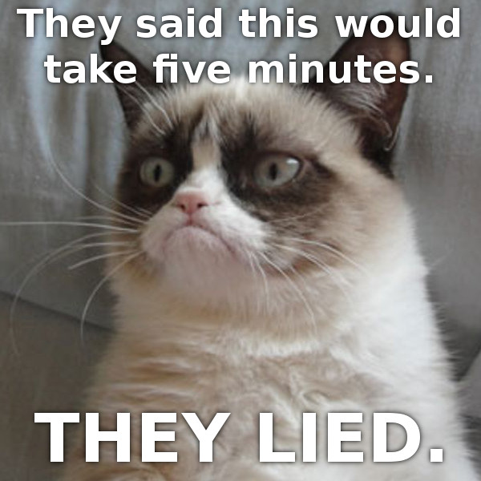Already too impatient? You can always check into The Barn online instead, it's not unlike what we'll do below.
For your convenience, we've zipped up all the files pre-configured for out-of-the-box enjoyment. Simply save quickyActive.zip to a local directory and unzip the files.
From the directory where you saved all the files, run the following three commands:
npm install smartspaces npm install hlc-server npm install json-silo
Everything is now installed and we're ready to run!
From the directory where you saved all the files, run:
node quickyActive
You should see something similar to the following in the console, the order isn't important:
smartspaces-server is listening on port 3000 hlc-server is listening on port 3001 json-silo is listening on port 3002 quickyActive: wow, that was fast!
Now we're ready to have some fun!
Point your favourite browser to localhost:3000 and from the pull-down, select "My dumb space" as below.
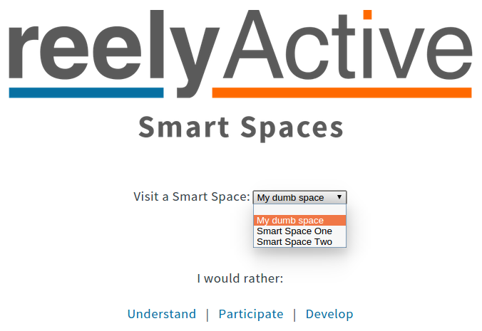Oh no! It's Kim Jong-il from Team America: World Police at his piano singing about his loneliness! That's because he is in fact all alone: no one has checked in here yet. Let's check in and see what happens.
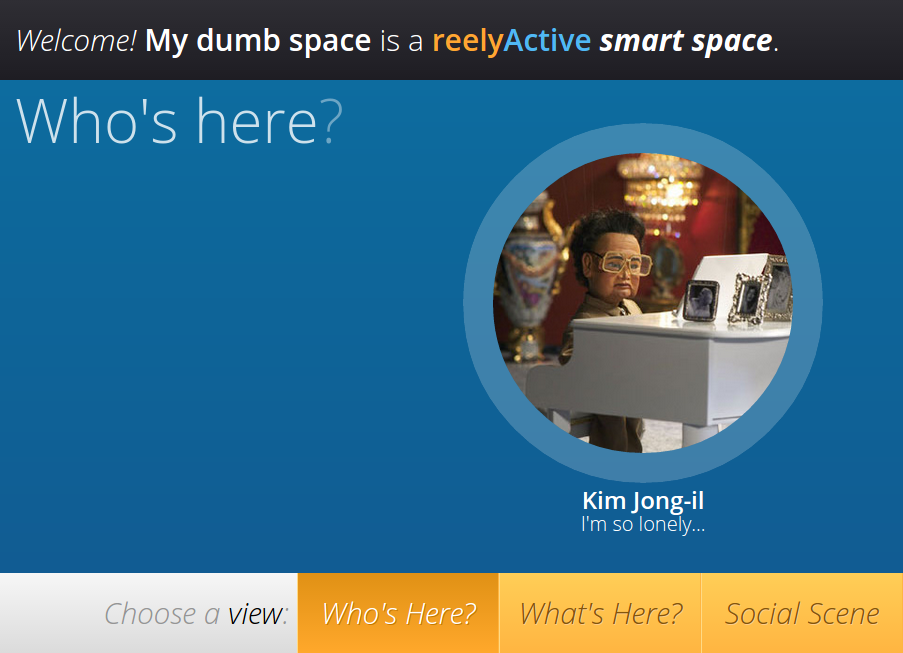Point your favourite browser to localhost:3002 to access the JSON Silo. Fill in the page as below, or enter your own profile.
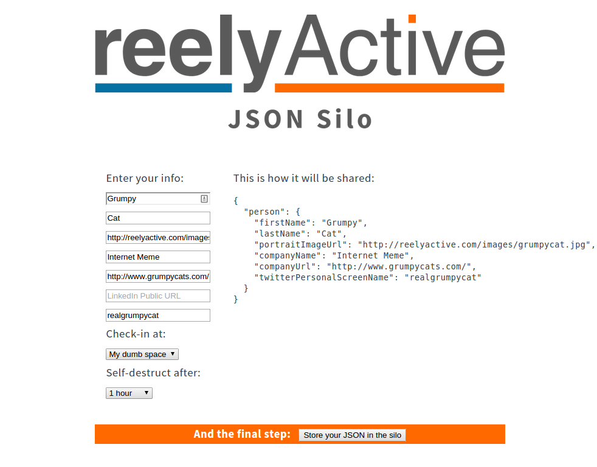Once complete, click on "Store your JSON in the silo".
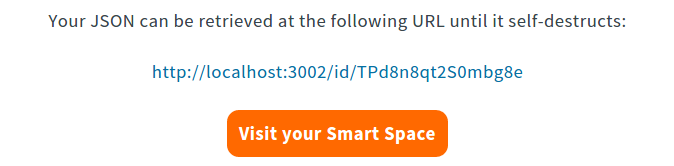Your profile, or what we call a digital story, will now be hosted for 1 hour at the URL shown above. It will also be checked in to "My dumb space". Click the "Visit your Smart Space" button to proceed.
Look! Kim Jong-il has been replaced by Grumpy Cat (or whatever you decided to enter in the silo). You can even read her tweets.
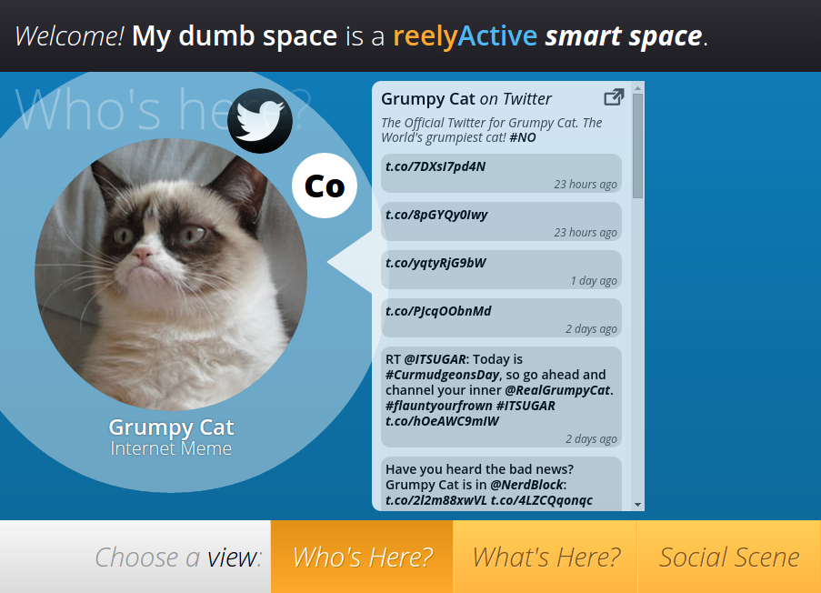The reason we called this "My dumb space" is because it cannot automatically detect the presence of those who visit. A manual check-in is required, and, like any human-entered data, this is error prone. Smart Spaces don't require such human intervention, they reliably detect presence via the equivalent of invisible buttons.
Now let's visit two Smart Spaces that respond, in real-time, to the presence of their occupants. Point your favourite browser to localhost:3000/smart-one and localhost:3000/smart-two, opening each in a separate tab or, ideally, side-by-side.
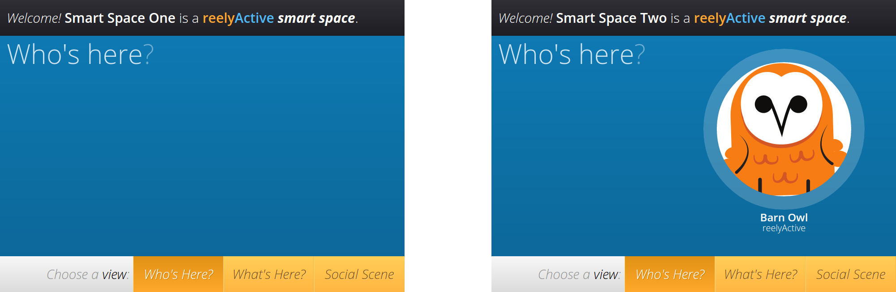Notice that Barn Owl is floating between the two spaces. That's happening for two reasons:
Let's create another profile and associate it with the other wireless device so that we can float between the spaces like Barn Owl.
Point your favourite browser back to localhost:3002 to access the JSON Silo. You can enter the same information again, or get creative. But this time, don't check in at "My dumb space". Instead, we're going to select "-" and not check in anywhere, because the Smart Spaces will detect our presence automagically.
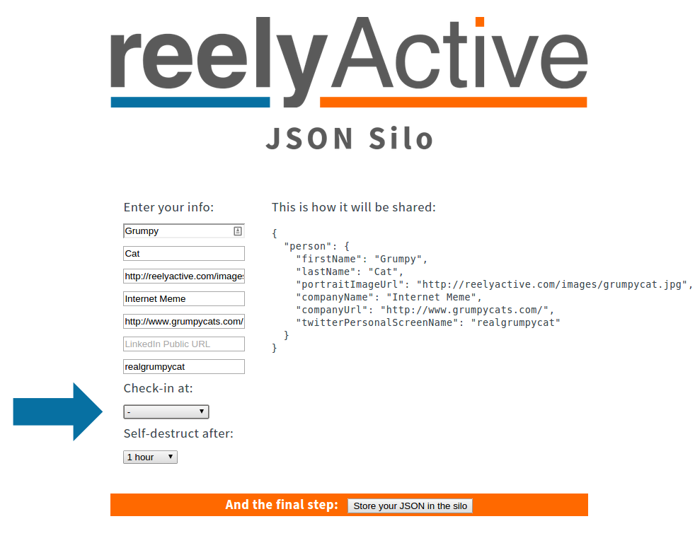Once complete, click on "Store your JSON in the silo".
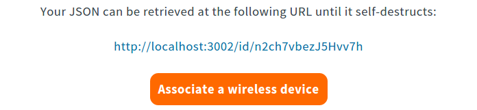Your digital story will again be hosted for 1 hour at the URL shown above. The final step will be to associate that URL with the unique identifier of the wireless device. That way, whenever the wireless device is detected, the Smart Space can retrieve its digital story via the URL. Make sense? Click on "Associate a wireless device" to proceed.
You'll now be redirected to the Hyperlocal Context server which will store the association. Notice that the JSON URL has already been entered for you, all you need to do is enter the unique identifier of the wireless device. In this case it is:
fee150bada55
Enter that into the Device ID field as below:
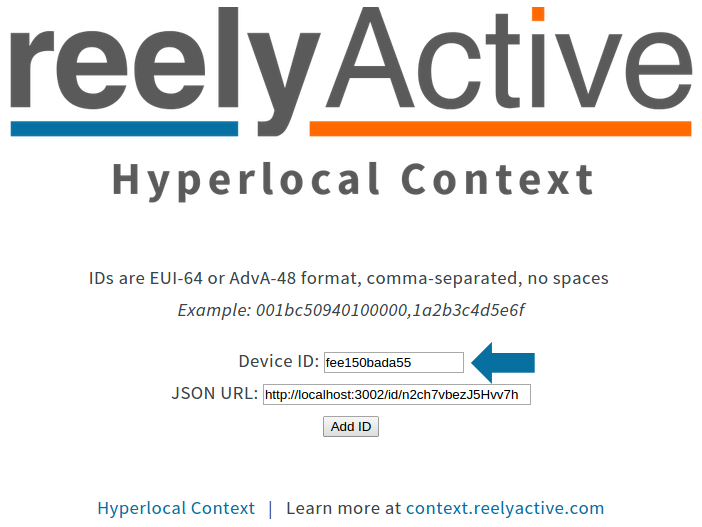Now click "Add ID" to complete the association.
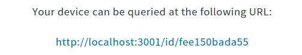If you're feeling nerdy you can click on the link and you'll be rewarded with a screen full of JSON describing the wireless transmission and on which reelceiver it was detected the strongest. Let's not get into that now though...
Instead, let's once again pull up those two Smart Spaces side by side, and this time you should see both Barn Owl and the profile we created wandering between the two.
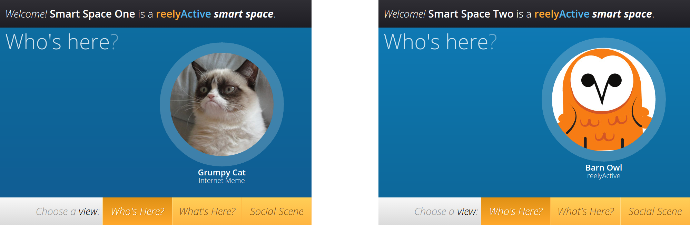After 1 hour, the digital story we created in the JSON Silo will expire and self-destruct. Grumpy Cat (or whatever you entered) will disappear from the Smart Spaces because his story can no longer be retrieved, even if his wireless device is still anonymously detected. That is the beauty of Smart Spaces: you're always in control of when and where to share your digital story via your presence, which is automatically detected in any Smart Space you enter.
Congratulations, you completed quickyActive and created both dumb and (sort of) Smart Spaces!
If you haven't already done so, learn more about Hyperlocal Context on the reelyActive website. To dive deeper into what we just did, read our Make a Smart Space tutorial where you'll also find out how to connect a hardware starter kit.
Alternatively, you can waste some time looking at pictures of Grumpy Cat and watching Team America video clips. Have fun!